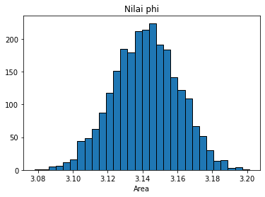

Tugas 7
Metode Monte Carlo
Dalam matematika, integrasi Monte Carlo adalah integrasi numerik menggunakan angka acak. Integrasi ini digunakan untuk mengevaluasi nilai integral tentu, biasanya yang multidimensi. Berbeda dengan metodemetode integrasi yang lain, integrasi Monte Carlo menggunakan bilangan acak untuk mengambil titik sampel dari daerah yang diintegrasikan. Akan tetapi pembangkit bilangan acak yang sudah ada sekarang tidak ada yang bisa menghasilkan bilangan yang benar-benar acak. Karena itu perlu ditambahkan pemeriksaan agar bilangan yang dihasilkan acak dan diusahkan bilangan acak yang ada berjauhan dengan bilangan acak yang lain.
Salah satu yang unik dalam metode integrasi Monte Carlo adalah galat yang diperoleh dari metode integrasi ini bisa berbeda tergantung dari jumlah datanya. Untuk data-data yang sedikit di dimensi yang sedikit, akurasi Monte Carlo lebih rendah dibanding metode-metode integrasi lain. Akan tetapi bila datanya banyak dan multidimensi, integrasi ini jauh lebih cepat dibandingkan metode integrasi yang lain.
Metode Monte Carlo pertama kali ditemukan oleh Enrico Fermi pada tahun 1930-an. Melihat dari cara kerjanya metode Monte Carlo merupakan metode yang memberikan segala kemungkinan nilai dari suatu variabel. Metode Monte Carlo merupakan metode yang memanfaatkan strong law of large number dalam melakukan perhitungan, artinya semakin banyak variabel acak yang digunakan akan semakin baik pula pendekatan nilai eksaknya. Metode Monte Carlo menggunakan rata-rata sebagai penaksir nilai eksaknya.
Soal
Listing Program 1
from scipy import random
import numpy as np
import matplotlib.pyplot as plt
a = 0
b = 2
N = 2500
#function for integral
def func(x):
return (4-x**2)**0.5
area = []
for i in range(N):
xrand = np.zeros(N)
for i in range(len(xrand)):
xrand[i] = random.uniform(a,b)
integral = 0.0
for i in range(N):
integral+=func(xrand[i])
jawab = (b-a)/float(N)*integral
area.append(jawab)
plt.title("Nilai phi")
plt.hist(area,bins = 30, ec = 'black')
plt.xlabel("Area")
plt.show()
print("Nilai phi terletak pada x =",jawab)
Output Program 1
Karena menggunakan bilangan random, maka nilai phi yang muncul akan berubah-ubah setiap program dijalankan.
- Hasil run program pertama :
Nilai phi terletak pada x = 3.131335254731468
- Hasil run program kedua :

Nilai phi terletak pada x = 3.1560310025850873
Dan seterusnya.
Listing Program 2
from scipy import random #import library random dari scipy
import numpy as np #import library numpy
a = -1
b = 1
N=100
n=3
xrand=np.zeros(N)#dx
yrand=np.zeros(N)#dy
zrand=np.zeros(N)#dz
#fungsi np.zeros mengembalikan array baru dengan bentuk dari tipe yang diberikan, di mana nilai elemen sebagai 0.
integral=0.0
for i in range(n+1):
for i in range(len(xrand)):
xrand[i]=random.uniform(a,b)
for i in range(len(yrand)):
yrand[i]=random.uniform(a,b)
for i in range(len(zrand)):
zrand[i]=random.uniform(a,b)
def func(x,y,z):
return (x**2)+(y**2)+(z**2)
for i in range(N):
integral+=func(xrand[i],yrand[i],zrand[i])
jwb=(b-a)/float(N)*integral
print("Hasil perkiraan : ",jwb)
Output Program 2
Karena menggunakan bilangan random, maka nilai perkiraan yang muncul akan berubah-ubah setiap program dijalankan.
- Hasil run program pertama :
Hasil perkiraan : 8.090240302495754
- Hasil run program kedua :
Hasil perkiraan : 7.93905619765376
Dan seterusnya.
Kemudian dibandingkan dengan perhitungan manual sebagai berikut :
Perhitungan manual
Perbandingan hasil perhitungan program dan perhitungan manual selisihnya yaitu :
- 8.090240302495754 - 8 = 0.090240302495754
- 7.93905619765376 - 8 = -0.06094380234624‬
Kesimpulan :
Selisih hasil perhitungan program dan perhitungan manual sekitar -0.1 sd 0.1.
.
.
.
Sekian dan Terimakasih.
.
.
.